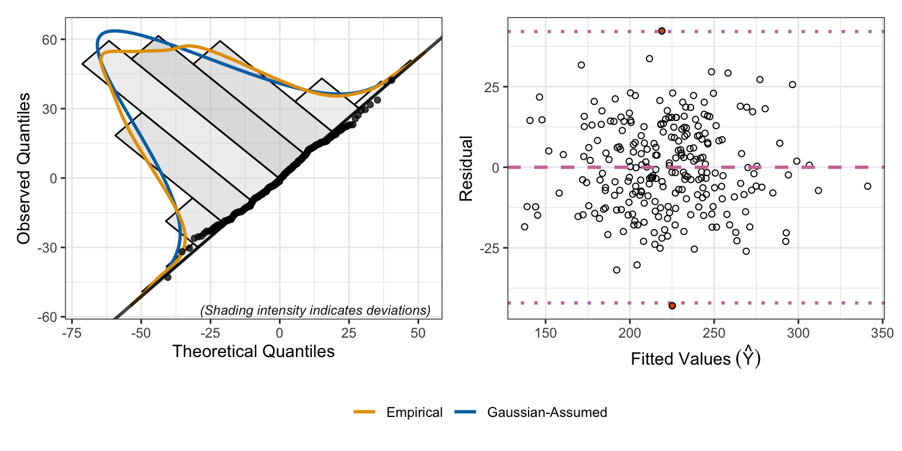
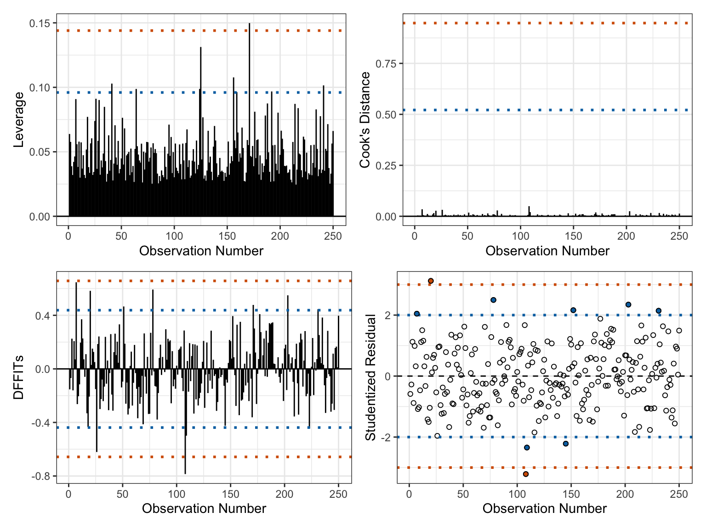
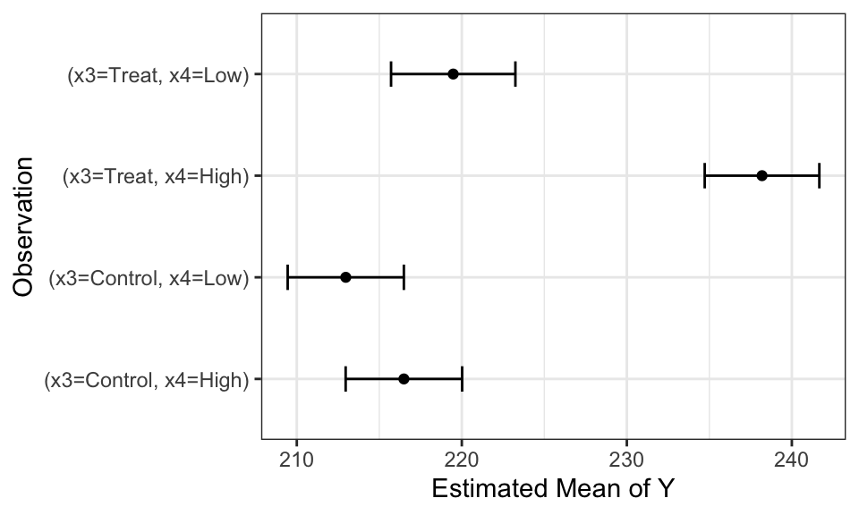
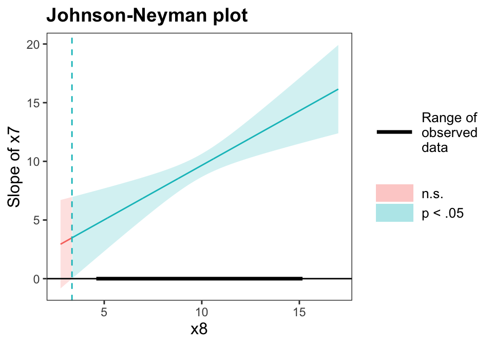
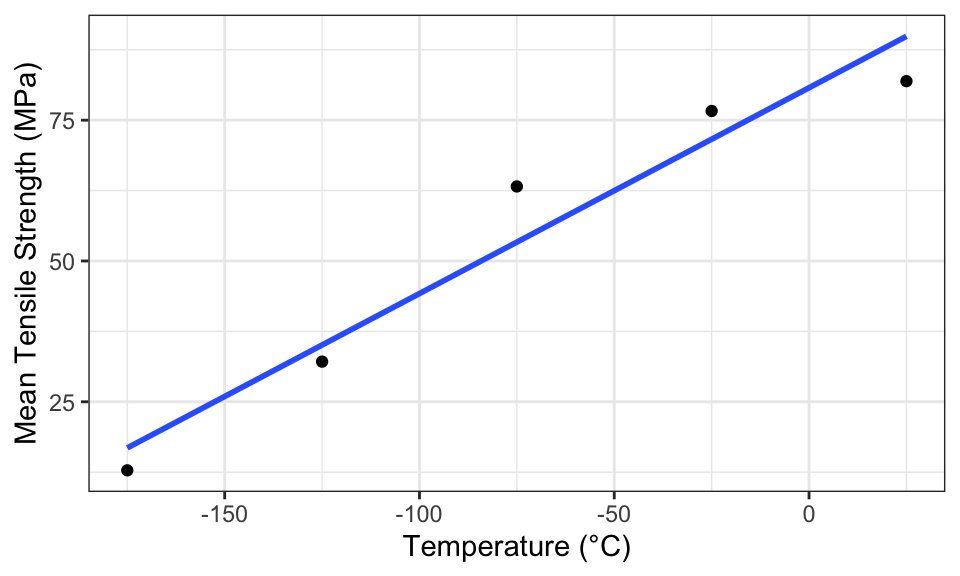
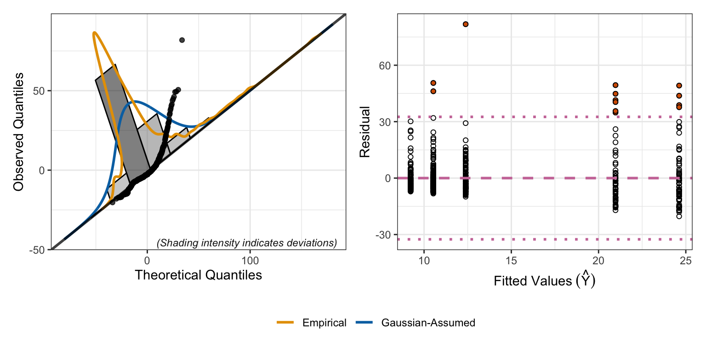
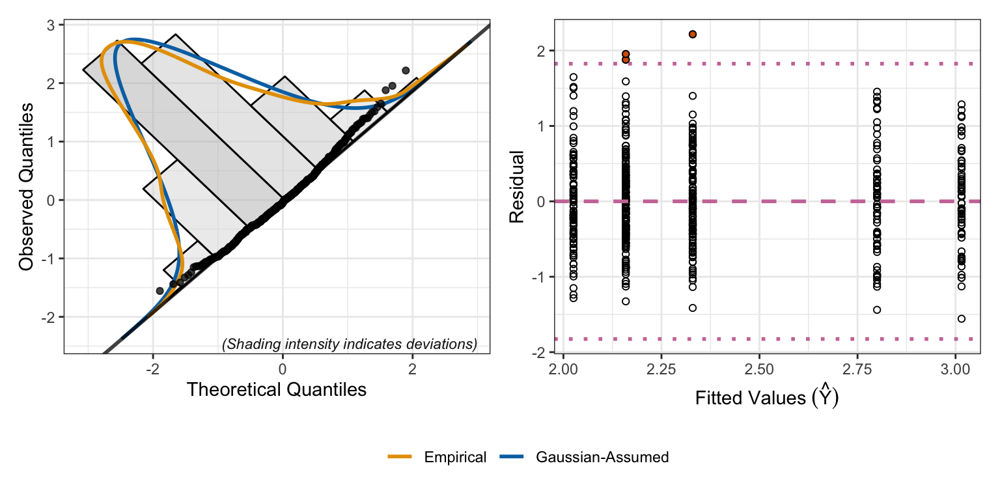
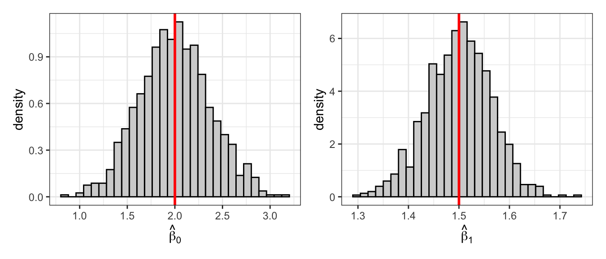
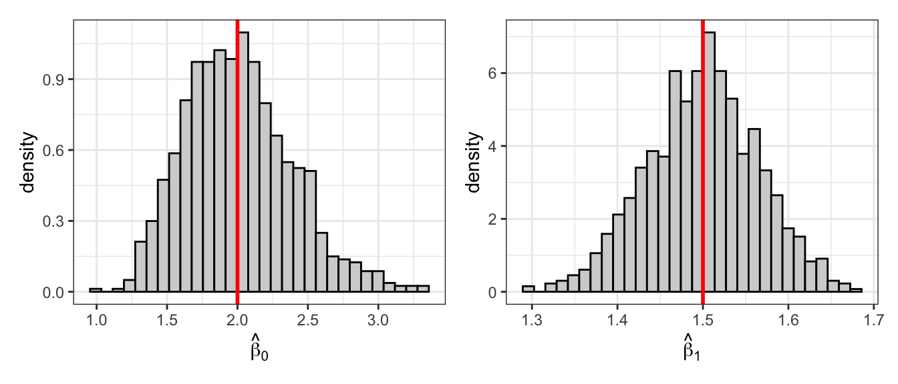
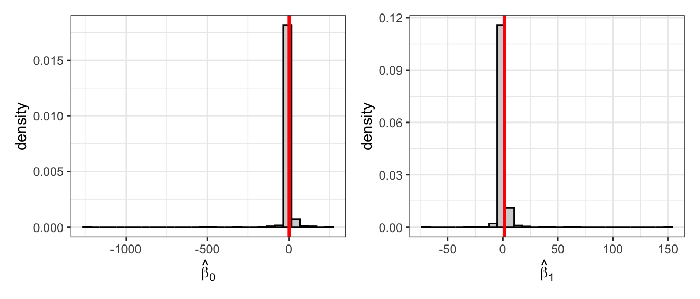

Figure 1: Residual analysis for the model in Question 1.

In Figure 1, the residuals fall close to the line in the QQ plot and the histogram is approximately Gaussian. The fitted vs. residual plot shows an even band around zero with no pattern. Thus, the residuals appear Gaussian with mean zero and common variance.
Code
plotInfluence(mod.q1)
Figure 2: Outlier and influence analysis for the model in Question 1.

In Figure 2, a few observations have high leverage and a few have large studentized residuals. However, no observation has both, and all Cook’s distances are far below the cutoffs. Thus, no observation has undue influence on the fit, and we do not remove any data.
1.3 Part c
Interpret the intercept, the coefficients on \(x_1\) and \(x_2\).
Intercept (\(\widehat{\beta}_0 = 8.90\)): The expected value of \(Y\) when \(x_1=x_5=x_7=x_8=0\) and the categorical predictors are at their baseline levels (\(x_2=\text{A}\), \(x_3=\text{Control}\), \(x_4=\text{Low}\), \(x_6=\text{Group1}\)). This is not meaningful, since \(x_1\), \(x_7\), and \(x_8\) are never near zero in the data; large standard error (26.94).
\(x_1\) (\(\widehat{\beta}_1 = 2.14\)): Holding all other predictors constant, a one-unit increase in \(x_1\) is associated with a 2.14 increase in the expected value of \(Y\).
\(x_2\) (\(\widehat{\beta}_2 = 10.03\)): Holding all other predictors constant, the expected value of \(Y\) is 10.03 higher when \(x_2=\text{B}\) than when \(x_2=\text{A}\).
1.4 Part d
Untangle and interpret the \(x_3*x_4\) interaction using algebra. Use Table 1 and Figure 3 for context.
Code
library(emmeans)emm.q1d <-emmeans(mod.q1, ~x3*x4) |># Don't average across levels: use |x2*x6data.frame() |>rename("Mean"="emmean","Lower"="lower.CL","Upper"="upper.CL")
Table 1: Estimated marginal means for the model in Question 1.
x3
x4
Mean
SE
df
Lower
Upper
Control
Low
212.9676
1.7871
238
209.4470
216.4882
Treat
Low
219.4792
1.9123
238
215.7120
223.2464
Control
High
216.4894
1.7916
238
212.9601
220.0188
Treat
High
238.1930
1.7631
238
234.7198
241.6662
Code
emm.q1d <- emm.q1d |>mutate(Observation =paste("(x3=", x3, ", ", "x4=", x4, ")", sep=""))ggplot(emm.q1d) +geom_point(aes(x=Mean, y=Observation))+geom_errorbar(aes(y=Observation,xmin=Lower, xmax=Upper),width =0.25)+# facet_wrap(~x2*x6)+theme_bw()+xlab("Estimated Mean of Y")
Figure 3: Estimated marginal means for the model in Question 1.

Holding the other predictors fixed, let \(C\) denote the contribution of all other terms. Then
So the effect of Treat (vs. Control) is \(\beta_3\) when \(x_4=\text{Low}\) and \(\beta_3+\beta_9\) when \(x_4=\text{High}\). That is, \(\beta_9\) is the difference in the treatment effect between the High and Low groups.
\(\widehat{\beta}_3 = 6.51\): When \(x_4=\text{Low}\), Treat is associated with a 6.51 higher expected \(Y\) than Control.
\(\widehat{\beta}_4 = 3.52\): When \(x_3=\text{Control}\), High is associated with a 3.52 higher expected \(Y\) than Low.
\(\widehat{\beta}_9 = 15.19\): The treatment effect is 15.19 larger when \(x_4=\text{High}\) (\(6.51+15.19=21.70\)) than when \(x_4=\text{Low}\) (\(6.51\)).
These match Table 1: \(219.48-212.97=6.51\), \(216.49-212.97=3.52\), and \(238.19-216.49=21.70\). In Figure 3, the (Treat, High) group sits well above the other three, with a confidence interval that does not overlap theirs, while the other three groups are similar. This reflects the interaction: the treatment effect is much larger when \(x_4=\text{High}\).
1.5 Part e
Untangle and interpret the \(x_5*x_6\) interaction using algebra. Use Table 2 and Figure 4 for context.
So the slope of \(x_5\) is \(\beta_5\) in Group1 and \(\beta_5+\beta_{10}\) in Group2. That is, \(\beta_{10}\) is the difference in the slope of \(x_5\) between the two groups.
\(\widehat{\beta}_5 = 2.48\): In Group1, a one-unit increase in \(x_5\) is associated with a 2.48 increase in expected \(Y\).
\(\widehat{\beta}_6 = 4.98\): When \(x_5=0\) (its mean), Group2 has a 4.98 higher expected \(Y\) than Group1.
\(\widehat{\beta}_{10} = 6.95\): The slope of \(x_5\) is 6.95 larger in Group2 (\(2.48+6.95=9.43\)) than in Group1 (\(2.48\)).
These match Table 2. Note the 95% confidence interval for the Group1 slope, \((-0.07, 5.03)\), includes zero, while the interval for the Group2 slope, \((6.80, 12.06)\), does not. In Figure 4, the Group2 line is much steeper, and the lines cross near \(x_5 = -4.98/6.95 \approx -0.72\). So the difference between groups depends on \(x_5\).
1.6 Part f
Untangle and interpret the \(x_7*x_8\) interaction using algebra. Use Table 3 and Table 4 for context.
Code
emm.q1f.x7 <-emtrends(mod.q1, var="x7", ~x7|x8, at =list(x8 =mean(dat.q1$x8) +c(-1, 0 ,1)*sd(dat.q1$x8))) |>data.frame() |>rename("Slope"="x7.trend","Lower"="lower.CL","Upper"="upper.CL") |> dplyr::select(x8, Slope, SE, df, Lower, Upper)
Table 3: Estimated marginal trends for the model in Question 1.
x8
Slope
SE
df
Lower
Upper
8.1309
7.9230
0.6751
238
6.5932
9.2529
10.0582
9.7129
0.5015
238
8.7250
10.7008
11.9854
11.5027
0.7396
238
10.0458
12.9597
Code
emm.q1f.x8 <-emtrends(mod.q1, var="x8", ~x8|x7, at =list(x7 =mean(dat.q1$x7) +c(-1, 0 ,1)*sd(dat.q1$x7))) |>data.frame() |>rename("Slope"="x8.trend","Lower"="lower.CL","Upper"="upper.CL") |> dplyr::select(x7, Slope, SE, df, Lower, Upper)
Table 4: Estimated marginal trends for the model in Question 1.
x7
Slope
SE
df
Lower
Upper
8.3824
6.8569
0.6069
238
5.6613
8.0525
10.2208
8.5643
0.4744
238
7.6297
9.4989
12.0592
10.2716
0.7325
238
8.8286
11.7146
A Johnson Neyman analysis using the interactions package for R(Long 2024), shows that the slope of \(x_7\) is statistically discernible for all observed values of \(x_8\) (Figure 5), and vice versa (Figure 6).
Code
library(interactions)johnson_neyman(mod.q1, pred = x7, modx = x8, control.fdr = T)
JOHNSON-NEYMAN INTERVAL
When x8 is OUTSIDE the interval [-13.08, 3.35], the slope of x7 is p < .05.
Note: The range of observed values of x8 is [4.69, 15.07]
Interval calculated using false discovery rate adjusted t = 1.97
Figure 5: Johnson Neyman interval for the model in Question 1.

Code
johnson_neyman(mod.q1, pred = x8, modx = x7, control.fdr = T)
JOHNSON-NEYMAN INTERVAL
When x7 is OUTSIDE the interval [-9.96, 4.25], the slope of x8 is p < .05.
Note: The range of observed values of x7 is [4.89, 14.60]
Interval calculated using false discovery rate adjusted t = 1.97
Figure 6: Johnson Neyman interval for the model in Question 1.
So the slope of \(x_7\) depends on \(x_8\), and vice versa. The estimated slopes are \(0.37 + 0.93x_8\) for \(x_7\) and \(-0.93 + 0.93x_7\) for \(x_8\).
\(\widehat{\beta}_7 = 0.37\) and \(\widehat{\beta}_8 = -0.93\) are the slopes when the other variable equals zero. These are not meaningful, since \(x_7\) and \(x_8\) are never near zero in the data.
\(\widehat{\beta}_{11} = 0.93\): For each one-unit increase in \(x_8\), the slope of \(x_7\) increases by 0.93 (and vice versa).
Table 3 shows the slope of \(x_7\) increases from 7.92 to 9.71 to 11.50 as \(x_8\) goes from one SD below its mean, to its mean, to one SD above. Similarly, Table 4 shows the slope of \(x_8\) increases from 6.86 to 8.56 to 10.27. All of these confidence intervals exclude zero.
1.7 Part g
Standardize the continuous data and refit the regression model. Redo part f. What do you notice about the coefficient estimates and why does this make the untangling process easier?
Solution: First, we fit the regression model using lm().
where a one-unit change is now a one-SD change. Since \(z_8=0\) corresponds to the mean of \(x_8\), \(\widehat{\beta}_7 = 17.86\) is the slope of \(x_7\) (per SD) when \(x_8\) is at its mean, and \(\widehat{\beta}_8 = 16.51\) is the slope of \(x_8\) (per SD) when \(x_7\) is at its mean. The interaction \(\widehat{\beta}_{11} = 3.29\) is how much each slope changes for a one-SD increase in the other variable (e.g., \(17.86 \pm 3.29\) gives 14.57 and 21.15 in Table 5).
Compared to part f, the main effects for \(x_7\) and \(x_8\) are now large, precisely estimated, and statistically discernible. This is because the original \(\widehat{\beta}_7\) and \(\widehat{\beta}_8\) described slopes at \(x_8=0\) and \(x_7=0\), which are far outside the data. Standardizing does not change the model fit; it moves the reference point to the mean, so the coefficients can be interpreted directly without plugging in values of the other variable.
2 Question 2
Cui and Mao (2025) investigate how freezing and cryogenic temperatures affect the strength, flexibility, stiffness, and internal breaking behavior of 3D-printed CF/PEEK composites.
Carbon fiber reinforced PEEK (CF/PEEK) is a high-performance composite used in 3D printing for aerospace, deep-sea, polar research. The researchers aimed to assess whether and how extremely cold environments impact this composite to understand how 3D-printed CF/PEEK performs in freezing conditions. This work would be important to understand its limits and develop preventative methods to protect against structural failures.
The researchers created fifteen 3D printed dog-bone-shaped test specimens and placed them in a chamber cooled with liquid nitrogen to \(25^\circ\text{C}\), \(-25^\circ\text{C}\), \(-75^\circ\text{C}\), \(-125^\circ\text{C}\), and \(-175^\circ\text{C}\). To test strength of the specimen, a machine pulled both ends of the specimen until it snapped.
In the table below, the researchers record the average tensile strength for three specimens from each temperature level.
Using the formulas, \(\widehat{\beta}_0 = 80.755\) and \(\widehat{\beta}_1 = 0.3654\).
2.2 Part b
Compute the estimates we derived using linear algebra in lecture 16: \[\widehat{\boldsymbol{\beta}} = \left(\mathbf{X}'\mathbf{X}\right)^{-1} \mathbf{X}'\mathbf{Y}.\]Hint: Run ?matrix() in R for a quick reminder about how to create a matrix.
Solution:
Code
X <-matrix(c(rep(1, n), x), ncol =2) # design matrix: column of 1s and xY <-matrix(y, ncol =1)beta.mat <-solve(t(X) %*% X) %*%t(X) %*% Ybeta.mat
[,1]
[1,] 80.7550
[2,] 0.3654
Using linear algebra, \(\widehat{\boldsymbol{\beta}} = (80.755, 0.3654)'\), matching part a.
2.3 Part c
Compute the maximum likelihood estimates using optim() in R as described in lecture 16: \[\max_{\beta_0, \beta_1, \sigma} \mathcal{L}(\boldsymbol{\theta}=\{\beta_0, \beta_1, \sigma\}).\]Solution:
The MLEs are \(\widehat{\beta}_0 \approx 80.753\), \(\widehat{\beta}_1 \approx 0.3654\), and \(\widehat{\sigma} \approx 6.49\).
2.4 Part d
Fit the model using lm() and plot the resulting model. Compare to the results from parts (a) through (c).
Solution:
Code
mod.q2 <-lm(strength ~ temp, data = dat.q2)summary(mod.q2)
Call:
lm(formula = strength ~ temp, data = dat.q2)
Residuals:
1 2 3 4 5
-7.96 5.01 9.88 -2.95 -3.98
Coefficients:
Estimate Std. Error t value Pr(>|t|)
(Intercept) 80.75500 5.46239 14.784 0.000671 ***
temp 0.36540 0.05299 6.895 0.006250 **
---
Signif. codes: 0 '***' 0.001 '**' 0.01 '*' 0.05 '.' 0.1 ' ' 1
Residual standard error: 8.379 on 3 degrees of freedom
Multiple R-squared: 0.9406, Adjusted R-squared: 0.9209
F-statistic: 47.54 on 1 and 3 DF, p-value: 0.00625
Code
ggplot(dat.q2, aes(x = temp, y = strength)) +geom_point() +geom_smooth(method ="lm", se =FALSE) +theme_bw() +xlab("Temperature (°C)") +ylab("Mean Tensile Strength (MPa)")
Figure 7: Mean tensile strength versus temperature with the fitted regression line.

All four approaches give really similar estimates: \(\widehat{\beta}_0 = 80.755\) and \(\widehat{\beta}_1 = 0.3654\). That is, at \(0^\circ\)C the expected mean tensile strength is 80.76 MPa, and for each \(1^\circ\)C increase in temperature, mean tensile strength is expected to increase by 0.37 MPa. The only difference is the estimate of \(\sigma\): the MLE divides by \(n\) (\(\widehat{\sigma} = 6.49\)), while lm() divides by \(n-p=3\) to give the unbiased estimate (\(s = 8.38\)).
3 Question 3
Bracht et al. (2016) evaluate MFAP4 as a biomarker for severity of fibrosis in hepatitic C patients.
Code
dat.mfap4 <-read_csv("Bracht2016.csv")
3.1 Part a
Fit the model predicting MFAP4 using Fibrosis.Stage. Write out the resulting estimate model and interpret the coefficients.
Code
mod.q3a <-lm(MFAP4 ~ Fibrosis.Stage, data = dat.mfap4)summary(mod.q3a)
Call:
lm(formula = MFAP4 ~ Fibrosis.Stage, data = dat.mfap4)
Residuals:
Min 1Q Median 3Q Max
-20.318 -5.518 -2.651 2.070 81.816
Coefficients:
Estimate Std. Error t value Pr(>|t|)
(Intercept) 9.230 1.102 8.378 4.73e-16 ***
Fibrosis.StageStage 1 1.301 1.372 0.948 0.3433
Fibrosis.StageStage 2 3.154 1.444 2.184 0.0294 *
Fibrosis.StageStage 3 11.742 1.724 6.812 2.59e-11 ***
Fibrosis.StageStage 4 15.388 1.724 8.928 < 2e-16 ***
---
Signif. codes: 0 '***' 0.001 '**' 0.01 '*' 0.05 '.' 0.1 ' ' 1
Residual standard error: 10.85 on 537 degrees of freedom
Multiple R-squared: 0.1965, Adjusted R-squared: 0.1905
F-statistic: 32.84 on 4 and 537 DF, p-value: < 2.2e-16
The estimated model is \[\begin{align*}
\widehat{\text{MFAP4}} =\ & 9.23 + 1.30\, I(\text{Stage 1}) + 3.15\, I(\text{Stage 2}) \\
& + 11.74\, I(\text{Stage 3}) + 15.39\, I(\text{Stage 4}).
\end{align*}\]
\(\widehat{\beta}_0 = 9.23\): The expected MFAP4 level for patients with Stage 0 fibrosis.
\(\widehat{\beta}_1 = 1.30\): Patients with Stage 1 fibrosis have an expected MFAP4 level 1.30 higher than Stage 0.
\(\widehat{\beta}_2 = 3.15\): Stage 2 is 3.15 higher than Stage 0.
\(\widehat{\beta}_3 = 11.74\): Stage 3 is 11.74 higher than Stage 0.
\(\widehat{\beta}_4 = 15.39\): Stage 4 is 15.39 higher than Stage 0.
So expected MFAP4 increases with fibrosis stage, with a large jump from Stage 2 to Stage 3.
3.2 Part b
Conduct a residual analysis on the model in part a to demonstrate how to identify when you need a log transformation.
Code
plotResiduals(mod.q3a)
Figure 8: Residual analysis for the model in part a.

In Figure 8, the QQ plot curves upward in the right tail, and the histogram has a long right tail compared to the Gaussian curve. The fitted vs. residual plot also shows the spread of the residuals increasing with the fitted values.A log transformation of the response is needed.
3.3 Part c
Fit the model predicting log(MFAP4) using Fibrosis.Stage. Use the natural log, and not the \(\log_2(\cdot)\) recorded in the data file. Write out the resulting estimate model and interpret the coefficients.
Code
mod.q3c <-lm(log(MFAP4) ~ Fibrosis.Stage, data = dat.mfap4)summary(mod.q3c)
Call:
lm(formula = log(MFAP4) ~ Fibrosis.Stage, data = dat.mfap4)
Residuals:
Min 1Q Median 3Q Max
-1.55668 -0.41861 -0.04282 0.35845 2.21571
Coefficients:
Estimate Std. Error t value Pr(>|t|)
(Intercept) 2.02572 0.06178 32.789 < 2e-16 ***
Fibrosis.StageStage 1 0.13336 0.07694 1.733 0.083637 .
Fibrosis.StageStage 2 0.30399 0.08099 3.753 0.000193 ***
Fibrosis.StageStage 3 0.77408 0.09666 8.009 7.24e-15 ***
Fibrosis.StageStage 4 0.98957 0.09666 10.238 < 2e-16 ***
---
Signif. codes: 0 '***' 0.001 '**' 0.01 '*' 0.05 '.' 0.1 ' ' 1
Residual standard error: 0.6085 on 537 degrees of freedom
Multiple R-squared: 0.2312, Adjusted R-squared: 0.2255
F-statistic: 40.38 on 4 and 537 DF, p-value: < 2.2e-16
The estimated model is \[\begin{align*}
\widehat{\log(\text{MFAP4})} =\ & 2.03 + 0.13\, I(\text{Stage 1}) + 0.30\, I(\text{Stage 2}) \\
& + 0.77\, I(\text{Stage 3}) + 0.99\, I(\text{Stage 4}).
\end{align*}\]
\(e^{\widehat{\beta}_0} = e^{2.03} = 7.58\): The median MFAP4 level for Stage 0 patients is 7.58.
\(e^{\widehat{\beta}_1} = 1.14\): The median MFAP4 for Stage 1 is 1.14 times that of Stage 0 (14% higher).
\(e^{\widehat{\beta}_2} = 1.36\): Stage 2 is 1.36 times Stage 0 (36% higher).
\(e^{\widehat{\beta}_3} = 2.17\): Stage 3 is 2.17 times Stage 0 (117% higher).
\(e^{\widehat{\beta}_4} = 2.69\): Stage 4 is 2.69 times Stage 0 (169% higher).
3.4 Part d
Conduct a residual analysis on the model in part c to demonstrate that the conditions for using regression are met.
Code
plotResiduals(mod.q3c)
Figure 9: Residual analysis for the model in part c.

In Figure 9, after the log transformation the residuals fall close to the line in the QQ plot, with only slight deviation in the right tail, and the histogram closely matches the Gaussian curve. The fitted vs. residual plot shows bands of similar width centered at zero across all stages. Thus, the conditions for regression appear to be met.
3.5 Part e
Fit the model predicting log(MFAP4) using Fibrosis.Stage, Age, and Gender. Use the natural log, and not the \(\log_2(\cdot)\) recorded in the data file. Write out the resulting estimate model and interpret the coefficients.
Code
mod.q3e <-lm(log(MFAP4) ~ Fibrosis.Stage + Age + Gender, data = dat.mfap4)summary(mod.q3e)
Call:
lm(formula = log(MFAP4) ~ Fibrosis.Stage + Age + Gender, data = dat.mfap4)
Residuals:
Min 1Q Median 3Q Max
-1.55799 -0.40010 -0.03682 0.35968 2.28903
Coefficients:
Estimate Std. Error t value Pr(>|t|)
(Intercept) 1.518667 0.115808 13.114 < 2e-16 ***
Fibrosis.StageStage 1 0.126858 0.073594 1.724 0.08533 .
Fibrosis.StageStage 2 0.212539 0.079095 2.687 0.00743 **
Fibrosis.StageStage 3 0.598866 0.096575 6.201 1.12e-09 ***
Fibrosis.StageStage 4 0.828547 0.097208 8.523 < 2e-16 ***
Age 0.013110 0.002123 6.175 1.31e-09 ***
Gendermale -0.143405 0.050807 -2.823 0.00494 **
---
Signif. codes: 0 '***' 0.001 '**' 0.01 '*' 0.05 '.' 0.1 ' ' 1
Residual standard error: 0.5812 on 535 degrees of freedom
Multiple R-squared: 0.3012, Adjusted R-squared: 0.2934
F-statistic: 38.44 on 6 and 535 DF, p-value: < 2.2e-16
Exponentiating the coefficients, holding the other predictors constant:
\(e^{\widehat{\beta}_0} = 4.57\): The median MFAP4 for a female Stage 0 patient of age 0. This is not meaningful, since no patients are near age 0.
\(e^{\widehat{\beta}_1} = 1.14\), \(e^{\widehat{\beta}_2} = 1.24\), \(e^{\widehat{\beta}_3} = 1.82\), \(e^{\widehat{\beta}_4} = 2.29\): Compared to Stage 0 patients of the same age and gender, the median MFAP4 is 14%, 24%, 82%, and 129% higher for Stages 1, 2, 3, and 4, respectively.
\(e^{\widehat{\beta}_5} = 1.013\): Each additional year of age is associated with a 1.3% higher median MFAP4.
\(e^{\widehat{\beta}_6} = 0.87\): Males have a median MFAP4 about 13% lower than females.
Compared to part c, the stage effects are smaller after adjusting for age (e.g., Stage 4 drops from 2.69 to 2.29 times Stage 0). This suggests part of the stage effect in part c was due to patients with more advanced fibrosis tending to be older.
4 Question 4
Code
# Simulate R regressions, storing the coefficient estimatessim.coefs <-function(error.fun, R =1000, n =30) { results <-tibble(b0 =rep(NA, R), b1 =rep(NA, R))for (i in1:R) { x <-runif(n, min =0, max =10) e <-error.fun(n) y <-2+1.5* x + e mod <-lm(y ~ x) results$b0[i] <-coef(mod)[1] results$b1[i] <-coef(mod)[2] } results}# Plot the sampling distributions with the true values markedplot.coefs <-function(results) { p0 <-ggplot(results, aes(x = b0)) +geom_histogram(aes(y =after_stat(density)), bins =30,fill ="lightgrey", color ="black") +geom_vline(xintercept =2, color ="red", linewidth =1) +theme_bw() +xlab(bquote(hat(beta)[0])) p1 <-ggplot(results, aes(x = b1)) +geom_histogram(aes(y =after_stat(density)), bins =30,fill ="lightgrey", color ="black") +geom_vline(xintercept =1.5, color ="red", linewidth =1) +theme_bw() +xlab(bquote(hat(beta)[1])) p0 | p1}
4.1 Part a
Simulate data to match regression assumptions in a loop that runs \(R=1000\) times. \[\begin{align*}
x_i &\sim \text{Uniform}(a=0,b=10)\\
\epsilon_i &\sim \text{Gaussian}(\mu=0, \sigma=1)\\
y_i &= 2 + 1.5 x_i + \epsilon_i\\
n &= 30
\end{align*}\] In each iteration, fit a regression line to the data and store the coefficient estimates. Plot the resulting estimates. What do you notice?
Code
set.seed(354)res.a <-sim.coefs(function(n) rnorm(n, mean =0, sd =1))plot.coefs(res.a)summary(res.a)
b0 b1
Min. :0.8418 Min. :1.297
1st Qu.:1.7508 1st Qu.:1.457
Median :1.9986 Median :1.502
Mean :1.9992 Mean :1.500
3rd Qu.:2.2443 3rd Qu.:1.544
Max. :3.1626 Max. :1.735
Figure 10: Sampling distributions of the coefficient estimates with Gaussian errors. Red lines mark the true values.

Both sampling distributions are bell-shaped and centered at the true values: the mean of \(\widehat{\beta}_0\) is 1.999 (true value 2) and the mean of \(\widehat{\beta}_1\) is 1.500 (true value 1.5). When the regression conditions are met, the OLS estimators are unbiased and approximately Gaussian.
4.2 Part b
Simulate data to match regression assumptions in a loop that runs \(R=1000\) times. \[\begin{align*}
x_i &\sim \text{Uniform}(a=0,b=10)\\
\epsilon_i &\sim \text{Shifted Exponential}(\lambda=1, \mu=0)\\
y_i &= 2 + 1.5 x_i + \epsilon_i\\
n &= 30
\end{align*}\] In each iteration, fit a regression line to the data and store the coefficient estimates. Plot the resulting estimates. What do you notice?
Hint: Use the tolerance::r2exp() function with rate=1 and shift=-1.
b0 b1
Min. :0.9936 Min. :1.296
1st Qu.:1.7279 1st Qu.:1.457
Median :1.9847 Median :1.501
Mean :2.0081 Mean :1.500
3rd Qu.:2.2414 3rd Qu.:1.543
Max. :3.3185 Max. :1.679
Figure 11: Sampling distributions of the coefficient estimates with shifted exponential errors. Red lines mark the true values.

Even though the errors are skewed, both sampling distributions are still centered at the true values. The distribution of \(\widehat{\beta}_1\) is approximately Gaussian, while \(\widehat{\beta}_0\) shows slight right skew. So OLS remains unbiased without Gaussian errors, and since the estimators are weighted averages of the data, the Central Limit Theorem makes their sampling distributions close to Gaussian even with \(n=30\).
4.3 Part c
Simulate data to match regression assumptions in a loop that runs \(R=1000\) times. \[\begin{align*}
x_i &\sim \text{Uniform}(a=0,b=10)\\
\epsilon_i &\sim \text{Cauchy}(m=0, s=1)\\
y_i &= 2 + 1.5 x_i + \epsilon_i\\
n &= 30
\end{align*}\] In each iteration, fit a regression line to the data and store the coefficient estimates. Plot the resulting estimates. What do you notice?
b0 b1
Min. :-1237.4315 Min. :-69.527
1st Qu.: 0.5564 1st Qu.: 1.177
Median : 2.1740 Median : 1.490
Mean : 0.4713 Mean : 1.624
3rd Qu.: 3.9374 3rd Qu.: 1.761
Max. : 247.2638 Max. :150.129
Figure 12: Sampling distributions of the coefficient estimates with Cauchy errors. Red lines mark the true values.

With Cauchy errors, the sampling distributions have extremely heavy tails: \(\widehat{\beta}_0\) ranges from \(-1237\) to \(247\) and \(\widehat{\beta}_1\) from \(-69.5\) to \(150.1\). While the medians are near the true values (2.17 and 1.49), the means are not (0.47 and 1.62), and a few extreme estimates dominate the histograms. Since the Cauchy distribution has no mean or variance, the Central Limit Theorem does not apply, and OLS estimates can be wildly wrong. Regression requires errors with finite variance.
References
Bracht, Thilo, Christian Mölleken, Maike Ahrens, et al. 2016. “Evaluation of the Biomarker Candidate MFAP4 for Non-Invasive Assessment of Hepatic Fibrosis in Hepatitis C Patients.”Journal of Translational Medicine 14 (1): 201.
Cui, Mengyang, and Jian Mao. 2025. “Effect of Low Temperature on Mechanical Properties and Fracture Behavior of 3D Printed Short Carbon Fiber Reinforced Polyether Ether Ketone Composites (CF/PEEK).”Scientific Reports 15 (1): 36244.